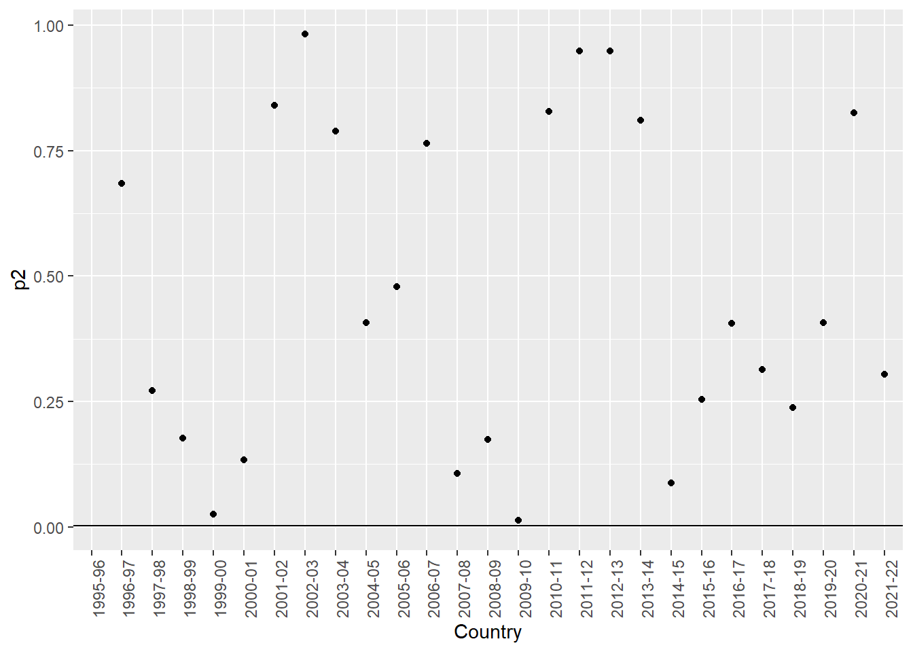

Chapter 4 The Normal Distribution
This chapter supplements the content in Lecture 3.
4.1 A Simple Demonstration of the Normal Distribution
First, let’s consider the ‘empirical distribution’, which is the pattern your data set makes.
Let’s consider UK births in 2020 for our example, since they’re a subject close to my heart (my first child was born in 2020).
Looking online, one can pull down the distribution of UK birthweights in 2020, available from the UK ONS website, and which are reported in 500g ‘bins’.
We can use these numbers to create a chart
(please note, the code I use for the demonstrations in this lesson is mostly modified from David Spiegelhalter’s originals, available on his Github page, with some of my own bits and bobs and new data…)
Spiegelhalter’s Github can be found here: https://github.com/dspiegel29/ArtofStatistics
The first thing I want to do is create a data set that accurately reflects the ONS distribution of UK birthweights in 2020. To do that, I use the following code, which in this instance I will display below, with annotations.
weights=c(1500, 2000, 2500, 3000, 3500, 4000, 4500,5000,5500) #modified
#categories from 2020 UK Data
mids=weights-250 # Note the DS original is +250, but this does not work for UK
#data as the numbered is the UPPER bound of the weight category in the ONS stats.
#So the babies in the '2000' bin weigh 1500-1999, so the midpoint is 1750, not
#2250
n=c(5015, 7103, 27554, 99220, 218442, 179088, 53530,6952,635) # numbers in each
#bin, UK2020
N=sum(n) # total number of babies
area=N*500 # number * binwidth = total area of histogram
#I think lbw should be sum of groups 1-3 not 1-2 as in the book code. Using 1-3
#gives a result for the UK of 6.6% which tallies with the official stat given
#that I remove the 'no recorded weight' and 'implausible' categories'. I imagine
#that the DS book data has categories which may be the lower bound not the upper
#as in the UK data table.
lbw = sum(n[1:3]) # number with low birth weight (less than 2500)
lbw.percent=100*lbw/N # % low birth weight
# 6.6% which tallies with Nuffield stat for 2020.Remember though, the above just sets up the numbers required to recreate the empirical distribution, it isn’t analysis itself.
Next, I want to summarize the distribution I just created and a few important numbers regarding Low Birthweight that we will need to use for our later discussion.
Displayed below are the total N for the distribution, the number of low birthweight (LBW) babies born, the percentage of LBW babies, the mean, the standard deviation, the skewness, and kurtosis.
## [1] 597539## [1] 39672## [1] 6.639232## [1] 3345.263## [1] 577.7594## [1] 0## [1] 1.77Next, I will calculate the estimated proportion of low birthweight babies using a normal distribution approximation, and see if it tallies OK with the figure that is taken from the distribution of 6.6%
## [1] 7.173338I will also calculate the middle birthweight proportion as a sense check - should be very close to 50%!
## [1] 49.98182For our reference, we will calculate the 25th, 50th, 75th percentiles
## [1] 2955.57## [1] 3345.263## [1] 3734.956Next I want to calculate the birthweight percentile of Monty, my son.
## [1] 0.8366843Now, at last, we can do some plots!
First let’s set up the histogram and overlay a normal distribution on to it.
The weight of Monty is overlaid as a red line. We can estimate if this is ‘unusual’ or not by how far away it is from the mean of the distribution.

4.2 What Actually is a Normal Distribution?
Below, I will chart the normal distribution with Standard Deviations.
Mathematically, around 95% of the area under the chart is between -2 and +2 SDs, and 99.8% between -3 and +3 SDs
Now, another way to think about this is that the area under the normal curve represents 100% of the probability of a given value (here, weight) occuring. So, you could say that it is around 95% probable that any given birthweight (randomly sampled) will occur between -2 and +2 SDs of the mean.
We can calculate this easily, given that the mean is 3345.263, and the SD is 577.7594
So, it is 95% probable that a random baby born in the UK in 2020 will weigh between 2189.745 and 4500.781g

We can calculate how many SDs Monty’s weight was above the mean by calculating the z-score for his weight of 3912g.
To do so, let’s return to the slide deck and see the calculation.
Move back to the slides…
Next, we can overlay percentiles in 5% increments on the chart, which are also useful ways to describe a distribution like the Normal.
50th is of course the median, and the 25th and 75th percentilies are the quartiles.
Here, the same things we have previously discussed in relation to samples are applied to populations
We can also see that Monty lies on the 83rd percentile, that is 83% of babies born in 2020 weighed less. This tallies with what we were told at the time, and then things are monitored quite closely from that time on in terms of percentiles.

Moving to a discussion of low birthweight. It is medically defined as low if below 2500g. Nuffield reports that 6.6% of babies in 2020 were born at low birthweight, which is fairly good.
This tallies fairly well with the predicted proportion from the normal distribution of 7.2%
What we gain from the grey shaded area is the proportion of the population which is expected to be born at low birthweight, but also an indication of the probability that a randomly-chosen baby born in 2020 would be of low weight.
This concept can easily be transferred to other weights in this population (and by extension to other variables and populations distributed like this)